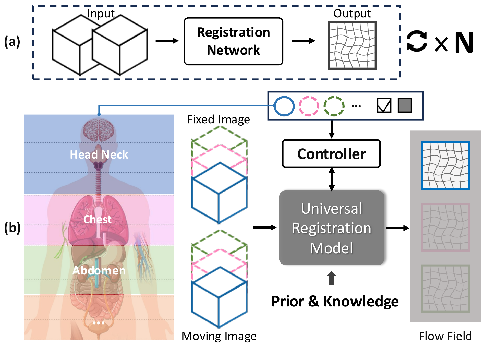
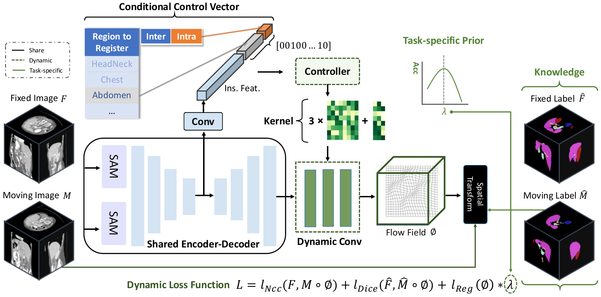
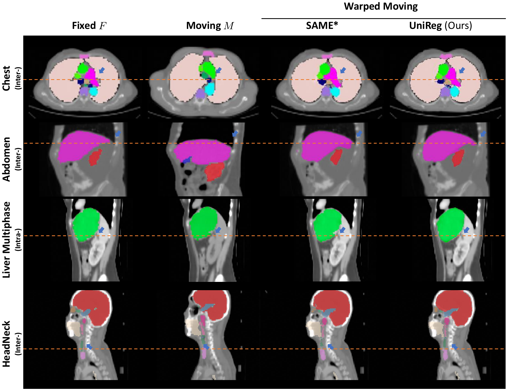
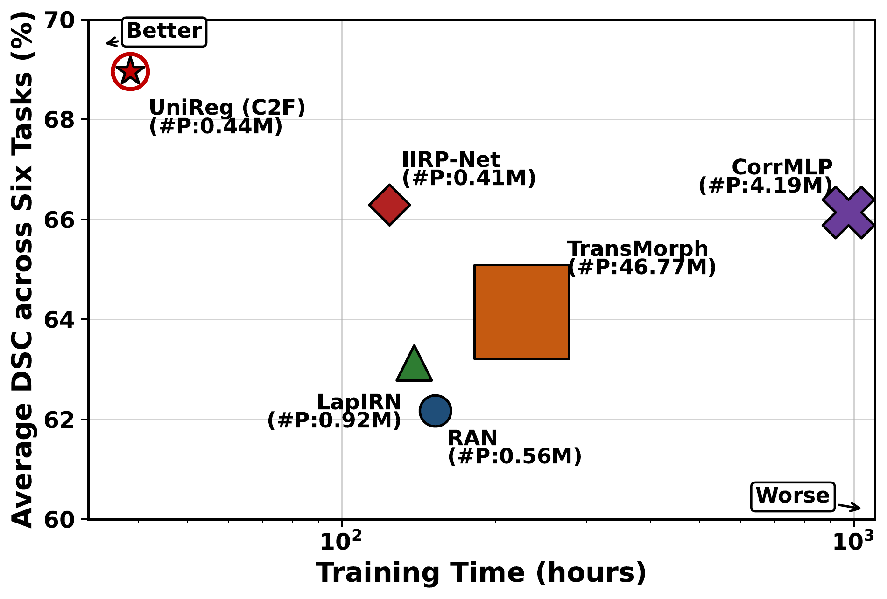

One model. Diverse registration scenarios.
Moving beyond independently trained networks for specific anatomical regions, modalities, and registration types.
UniReg is a conditional unified framework that estimates deformation fields across heterogeneous CT and MR registration tasks, by jointly modeling anatomical priors, inter-/intra-subject constraints, and instance-specific image features.

Method Overview
Condition-aware registration with a unified model architecture.

Anatomical structure priors
Provides anatomical guidance for alignment across different organs and imaging settings.
Registration type constraints
Conditions the deformation estimation process on inter-subject and intra-subject registration requirements.
Instance-specific features
Adapts the predicted deformation field to the characteristics of each moving and fixed image pair.
Experimental Results
Comprehensive comparisons across heterogeneous CT and MR registration scenarios.
Quantitative registration accuracy
Selected Dice similarity coefficient (DSC) results from the final manuscript's six-task comparison, reported as percentages. The strongest method varies by task.
| Method | HeadNeck | Chest | Abdomen | Liver | Cardiac MR | Brain MR |
|---|---|---|---|---|---|---|
| UniReg (C2F) | 57.04 | 56.69 | 55.08 | 87.08 | 76.10 | 81.79 |
| UniReg (MLP) | 57.02 | 56.48 | 55.32 | 87.03 | 76.21 | 81.97 |
| DEEDs | 54.21 | 52.72 | 46.52 | 83.50 | 75.01 | 73.84 |
Values are DSC (%) transcribed from the paper's principal comparison table. Consult the paper for complete baseline comparisons, deformation regularity metrics, and evaluation details.
Ablation Study: Single-task vs. Joint Training
Table IV compares training on each registration task independently with joint training using the same backbone and training protocol. Joint training improves Dice similarity coefficient (DSC) across all six tasks.
| Dataset | Single-task DSC (%) | Joint-training DSC (%) | Improvement |
|---|---|---|---|
| HeadNeck | 53.00 | 57.04 | +4.04 |
| Chest | 51.62 | 56.69 | +5.07 |
| Abdomen | 52.01 | 55.08 | +3.07 |
| Liver | 84.79 | 87.08 | +2.29 |
| Cardiac MR | 75.37 | 76.10 | +0.73 |
| Brain MR | 81.77 | 81.79 | +0.02 |
Table IV. Comparison between single-task training and joint training on different datasets. Both settings use the same backbone and training protocol. Values are DSC (%), and improvements are measured in percentage points.
Qualitative registration examples

Efficiency vs. registration accuracy

Citation
If UniReg is useful for your research, please consider citing our work.
@article{li2026unireg,
title={UniReg: Conditional Unified Model for Medical Image Registration},
author={Li, Zi and Zhang, Jianpeng and Ma, Tai and Mok, Tony C. W. and Zhou, Yan-Jie and Chen, Zeli and Ye, Xianghua and Lu, Le and Chen, Cheng and Jin, Dakai},
journal={IEEE Transactions on Circuits and Systems for Video Technology},
year={2026},
note={Accepted, publication metadata pending}
}Bibliographic volume, pages and DOI will be updated when the final publication record is available.